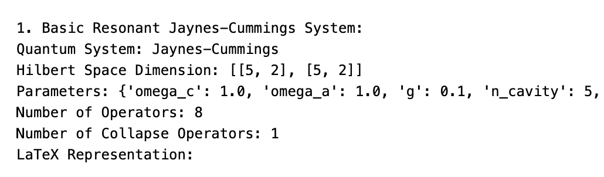
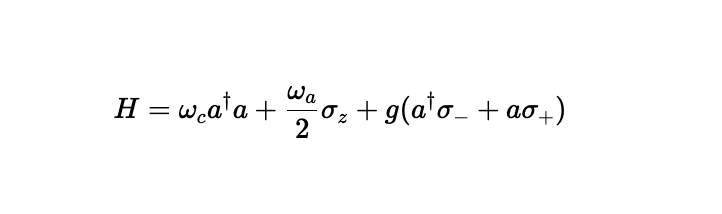

Week 9 & 10: Linear Spin Chain Implementation and PR Refinements
Week 9 & 10 focused on completing the linear spin chain implementation with full code construction details and addressing initial feedback from the QuTiP team’s PR review. This week demonstrated how our factory function architecture handles complex many-body systems while highlighting areas for improvement based on code review.
Linear Spin Chain: Complete Code Construction
The linear spin chain represents our most complex quantum system implementation yet, requiring careful construction of operators, Hamiltonians, and dissipation mechanisms across multiple interaction models.
Operator Construction: Building the Many-Body Hilbert Space
The foundation of any spin chain simulation is constructing operators that act on specific sites within the full many-body Hilbert space:
def _create_site_operator(N: int, site: int, single_op: qt.Qobj) -> qt.Qobj:
"""Create operator acting on specific site in N-spin chain"""
op_list = [qt.qeye(2)] * N
op_list[site] = single_op
return qt.tensor(op_list)This helper function demonstrates the tensor product structure essential for many-body systems. For a 4-spin chain, an operator acting on site 1 becomes qt.tensor([I, σ_x, I, I]) where I represents the identity on other sites.
Individual Site Operators: The implementation builds comprehensive operator sets for each site:
# Individual site operators
for k in range(N):
operators[f'S_{k}_x'] = _create_site_operator(N, k, qt.sigmax() / 2)
operators[f'S_{k}_y'] = _create_site_operator(N, k, qt.sigmay() / 2)
operators[f'S_{k}_z'] = _create_site_operator(N, k, qt.sigmaz() / 2)
operators[f'S_{k}_plus'] = _create_site_operator(N, k, qt.sigmap())
operators[f'S_{k}_minus'] = _create_site_operator(N, k, qt.sigmam())Note the factor of 1/2 for Cartesian components, ensuring proper spin-1/2 normalization, while raising/lowering operators remain unnormalized for standard quantum optics conventions.
Collective Operators: Total spin operators emerge naturally by summing individual contributions:
# Total spin operators
operators['S_x_total'] = sum(operators[f'S_{k}_x'] for k in range(N))
operators['S_y_total'] = sum(operators[f'S_{k}_y'] for k in range(N))
operators['S_z_total'] = sum(operators[f'S_{k}_z'] for k in range(N))Correlation Functions: Nearest-neighbor correlations provide insight into magnetic order:
# Nearest-neighbor correlation operators
operators['correlation_xx_nn'] = sum(operators[f'S_{k}_x'] * operators[f'S_{(k+1)%N}_x']
for k in range(N if boundary_conditions == "periodic" else N-1))
operators['correlation_zz_nn'] = sum(operators[f'S_{k}_z'] * operators[f'S_{(k+1)%N}_z']
for k in range(N if boundary_conditions == "periodic" else N-1))The modular arithmetic (k+1)%N handles periodic boundary conditions elegantly, while open boundaries use N-1 interactions.
Hamiltonian Construction: Supporting Multiple Models
The Hamiltonian construction demonstrates clean separation between different spin models:
def _build_hamiltonian(operators: dict, model_type: str, N: int, J: float, Jz: float,
boundary_conditions: str, B_x: float, B_y: float, B_z: float) -> qt.Qobj:
# Determine number of interaction terms
num_interactions = N if boundary_conditions == "periodic" else N - 1
# Interaction Hamiltonian
H_interaction = 0
for k in range(num_interactions):
k_next = (k + 1) % N
if model_type in ["heisenberg", "xxz", "xy"]:
# XY interactions (present in all except Ising)
H_interaction += J * (operators[f'S_{k}_x'] * operators[f'S_{k_next}_x'] +
operators[f'S_{k}_y'] * operators[f'S_{k_next}_y'])
if model_type in ["heisenberg", "xxz", "ising"]:
# Z interactions (present in all except XY)
H_interaction += Jz * operators[f'S_{k}_z'] * operators[f'S_{k_next}_z']
# External magnetic field
H_field = (B_x * operators['S_x_total'] +
B_y * operators['S_y_total'] +
B_z * operators['S_z_total'])
return H_interaction + H_fieldThis design elegantly handles four different models through conditional inclusion of interaction terms. The Heisenberg model includes both XY and Z terms, while specialized models like XY or Ising include only subset interactions.
Collapse Operator Construction: Realistic Many-Body Dissipation
Open system dynamics in many-body systems require careful treatment of local vs. collective dissipation:
def _build_collapse_operators(operators: dict, N: int, gamma_relaxation: float,
gamma_dephasing: float, gamma_depolarizing: float,
gamma_thermal: float, temperature: float,
transition_frequency: float) -> list:
c_ops = []
# Local dissipation on each site
for k in range(N):
# Spontaneous emission (relaxation)
if gamma_relaxation > 0.0:
c_ops.append(np.sqrt(gamma_relaxation) * operators[f'S_{k}_minus'])
# Pure dephasing
if gamma_dephasing > 0.0:
c_ops.append(np.sqrt(gamma_dephasing) * operators[f'S_{k}_z'])
# Depolarizing channel
if gamma_depolarizing > 0.0:
rate = gamma_depolarizing / 3.0
c_ops.append(np.sqrt(rate) * operators[f'S_{k}_x'])
c_ops.append(np.sqrt(rate) * operators[f'S_{k}_y'])
c_ops.append(np.sqrt(rate) * operators[f'S_{k}_z'])Thermal Bath Implementation: Finite temperature effects require detailed balance:
# Thermal bath coupling
if gamma_thermal > 0.0 and temperature > 0.0:
# Thermal factors (assuming spin-1/2 transition at transition_frequency)
beta = 1.0 / temperature # Assuming kB = 1
exp_factor = np.exp(-beta * transition_frequency)
# Thermal down transitions (relaxation)
p_down = 1.0 / (1.0 + exp_factor)
c_ops.append(np.sqrt(gamma_thermal * p_down) * operators[f'S_{k}_minus'])
# Thermal up transitions (excitation)
p_up = exp_factor / (1.0 + exp_factor)
c_ops.append(np.sqrt(gamma_thermal * p_up) * operators[f'S_{k}_plus'])This implementation ensures proper thermal equilibrium through the detailed balance condition p_up/p_down = exp(-β*ω).
LaTeX Generation: Model Specific Representations
Clean LaTeX generation handles the different model types:
def _generate_latex(model_type: str, J: float, Jz: float, B_x: float, B_y: float, B_z: float,
boundary_conditions: str) -> str:
# Interaction terms
if model_type == "heisenberg":
interaction = r"J \sum_{\langle i,j \rangle} \vec{S}_i \cdot \vec{S}_j"
elif model_type == "xxz":
interaction = r"J \sum_{\langle i,j \rangle} (S_i^x S_j^x + S_i^y S_j^y) + J_z \sum_{\langle i,j \rangle} S_i^z S_j^z"
elif model_type == "xy":
interaction = r"J \sum_{\langle i,j \rangle} (S_i^x S_j^x + S_i^y S_j^y)"
elif model_type == "ising":
interaction = r"J \sum_{\langle i,j \rangle} S_i^z S_j^z"The boundary condition notation (OBC) vs (PBC) provides immediate visual feedback about the model configuration.
PR Feedback and Code Quality Improvements
Working through the initial QuTiP team feedback revealed several important improvements needed for production quality code:
Testing Strategy Refinement
The team’s feedback about “avoiding over testing” and “remembering other tests already exist” highlighted the importance of balanced test coverage. Rather than duplicating QuTiP’s existing operator tests, our tests should focus on:
- Factory function interface correctness
- Model specific physics validation
- Parameter handling and edge cases
- Integration with the QuantumSystem framework
Visualization Integration
The suggestion to “check pretty_print latex with vscode” points toward ensuring our LaTeX output integrates well with common development environments, making the library more user friendly for interactive development.
Enhanced LaTeX Rendering: This feedback led to a significant improvement in the pretty_print() method with intelligent LaTeX rendering:
def pretty_print(self):
"""Pretty print system information"""
# Check if we're in a Jupyter environment
try:
from IPython.display import display, Markdown, Latex
in_jupyter = True
except ImportError:
in_jupyter = False
print(f"Quantum System: {self.name}")
print(f"Hilbert Space Dimension: {self.dimension}")
print(f"Parameters: {self.parameters}")
print(f"Number of Operators: {len(self.operators)}")
print(f"Number of Collapse Operators: {len(self.c_ops)}")
# Display LaTeX if available and in Jupyter
if self.latex and in_jupyter:
print("LaTeX Representation:")
display(Latex(f"${self.latex}$"))
else:
print(f"LaTeX: {self.latex}")This enhancement automatically detects the environment and renders beautiful mathematical equations in Jupyter notebooks while falling back to text display in terminal environments. The result is immediately visible complex Hamiltonians like the Jaynes-Cummings model now display as properly formatted equations rather than raw LaTeX strings.
 
This improvement significantly enhances the user experience for interactive quantum system exploration, making the library feel more professional and integrated with modern scientific computing workflows.
Meeting Insights: Architecture and Integration
The July 29th meeting provided valuable guidance on several architectural decisions:
Specific Classes vs. General Approach
Alex Pitchford’s question about “whether we should have specific classes for different quantum system types” reopened the design discussion. The general agreement was to postpone this decision, allowing our current general QuantumSystem approach to mature before considering specialized subclasses.
This decision validates our factory function strategy while keeping future options open for model specific optimizations.
Integration Timeline
The action items reveal the project is moving toward serious integration:
- Branch merging: Moving from development to production branches
- PR review process: Neill and Alex conducting thorough code review
- Test organization: Relocating tests to proper QuTiP structure
- Robustness testing: Using linear spin chains to stress test the architecture
Technical Validation and Scaling
The linear spin chain implementation successfully demonstrates our architecture’s ability to handle:
- Complex operator hierarchies (individual → collective → correlation operators)
- Multiple model variants within a single factory function
- Realistic dissipation with proper thermal physics
- Scalable parameter management across many configuration options
The warning system for large Hilbert spaces (N > 15) shows attention to computational practicality while maintaining full generality.
Reflections
Week 9 & 10 proved that our factory function architecture scales successfully to complex many-body systems. The linear spin chain implementation required no changes to the QuantumSystem base class, confirming our design’s robustness.
The PR feedback process has been invaluable for transitioning from research code to production software. Issues like parameter immutability and testing balance are exactly the kind of refinements needed for a library that other researchers will depend on.
Week 9 & 10 demonstrated that building robust scientific software requires both correct physics implementation and careful attention to software engineering practices. The linear spin chain implementation achieves both, providing a solid foundation for the final weeks of development.